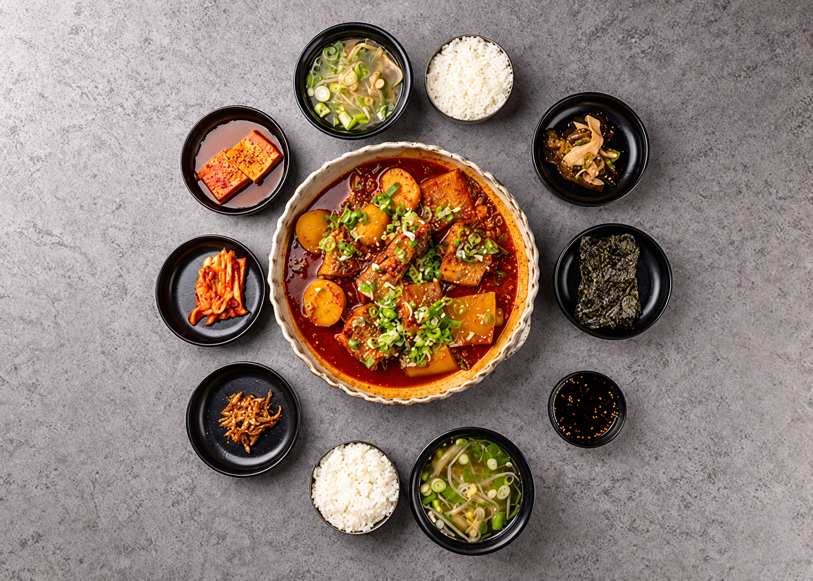
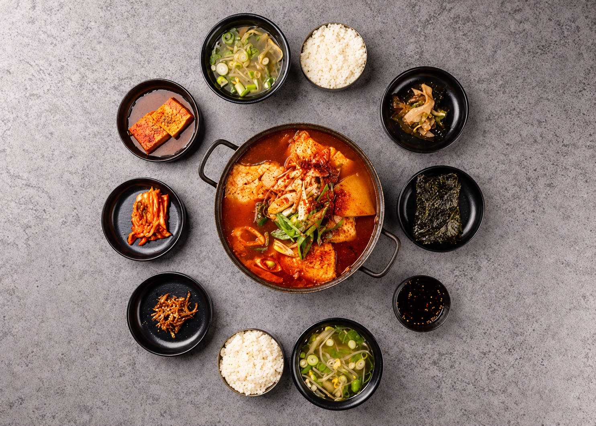
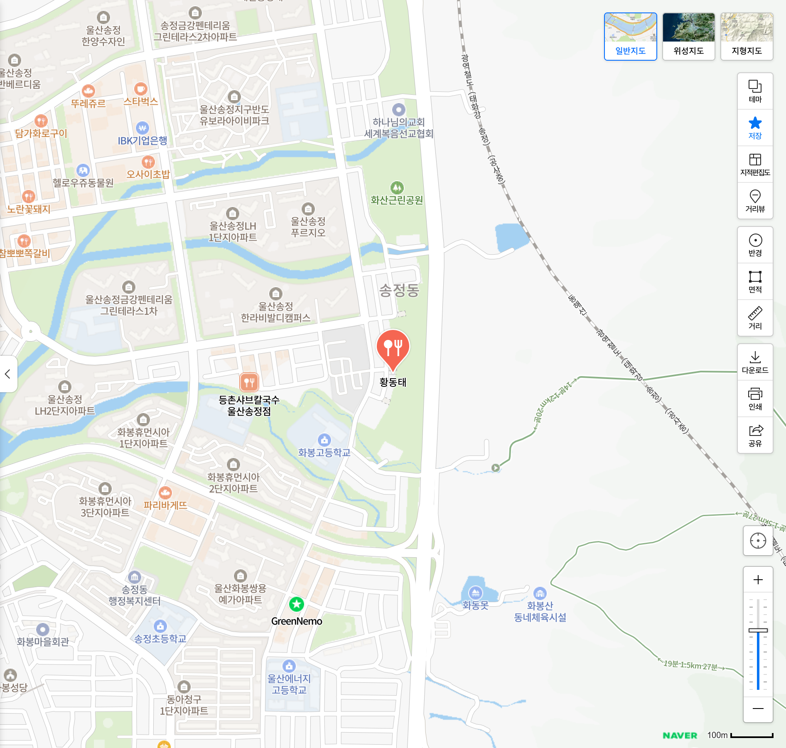

추천 조림 · 점심특선
밥 한 숟갈을 부르는
동태조림정식
12,000원자작한 양념의 동태조림을 한 상으로.
11:00–14:00 · 2인 이상 주문

조림 상차림 예시 · 생선은 매일 달라집니다손님들의 한 끼 이야기
사진 한 장, 짧은 이야기 하나.
리뷰 보기를 누르면 다른 손님의 후기를 볼 수 있습니다.
리뷰 작성을 눌러 사진과 글을 남겨 주세요.
체험용 목업 · 예시 전시와 월 2명 식사 초대 이벤트는 제안 내용입니다.

점심시간에는 든든한 정식으로,
함께하는 자리에는 조림과 전골로.
황태와 동태로 일상의 한 끼를 채웁니다.
주문 즉시 조리하는 메뉴라 시간이 걸릴 수 있어요.
방문 전 전화 주문이나 예약으로 더욱 여유롭게 식사하세요.
네이버 방문자 리뷰의 선택 키워드 · 2026.10.24 확인 · 복수 선택 가능
울산 북구 화산3길 10
휴무일은 방문 전 전화로 확인해 주세요.
재료 소진 시 조기 마감될 수 있습니다.
울산 북구 화산3길 10

황동태울산 북구 화산3길 10↔ 휴대폰에서는 지도를 좌우로 밀어 보세요.
네이버 지도 · 실제 위치
네이버 지도에서 자세히 보기 ↗